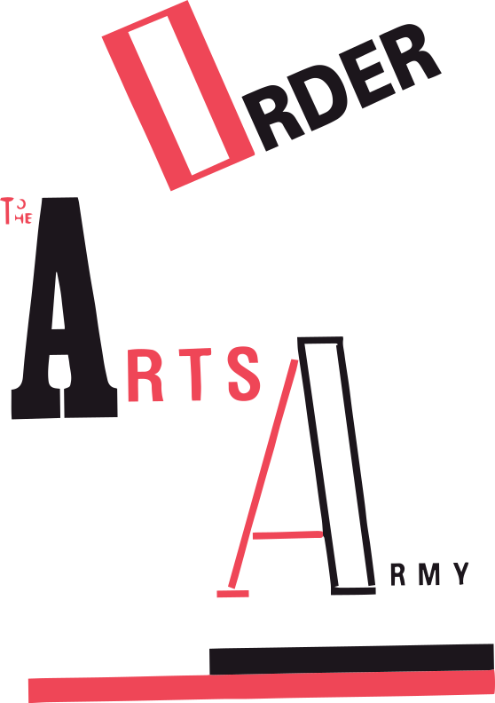

They fiddle, the oldies' brigades,
the same old-fashioned parts.
Comrades!
Man the barricades!
barricades of souls and hearts.
All genuine communists
have burnt the boats of retreat.
Don't just walk, you futurists -
into the future - leap!
What good is just building an engine
that goes off in a whirl of wheels?
If your song doesn't deafen the station,
why have AC and DC?
Sing and whistle, pile sound on sound,
and forward
march.
There are still good letters around.
R
Sha
Shcha.
What good is just forming ranks
with gold piping on your breeches?
Politicians can't move men or tanks
without the musicians' marches.
Haul pianos out to street corners,
at your windows beat with an oar
on the drum.
Split open all the pianos.
But let there be thunder.·
Let it roar.
Why disguise your face in soot
and sweat on the factory floor,
then off duty
stare like a fool
at the rich life they live next door?
Enough of your twopenny truths.
Clean your heart of all its old wares.
The streets are the brushes we’ll use,
our palettes the city squares.
Revolution is still a blank sheet
in the thousand-page book of time.
Futurists, out on to the street -
drummers and makers of rhyme!